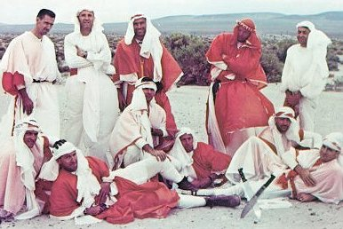
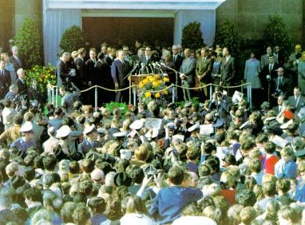
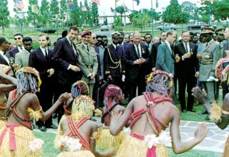

|  |
| Desert survival training was part of the regular program of what-ifs. If any flight had ended with an emergency landing in a desert, sun-protective dress and tents could have been fashioned from spacecraft parachutes. The astronauts were taught the best tricks for survival in the desert. Left to right, seated: Borman, Lovell, Young, Conrad, McDivitt, White. Standing: training officer Zedehar, Stafford, Slayton, Armstrong, and See. |
|  |
| Saying a few words to a sea of friendly faces was the lot of the Apollo 11 astronauts, whose world tour aboard Air Force One took them to a dizzying 24 countries in 45 days. |
|  |
| Children of Kinshasa dance a special welcome for the men from the Moon. Tact, diplomacy, an iron constitution, and a knack for public speaking were what the astronauts needed on tours. |